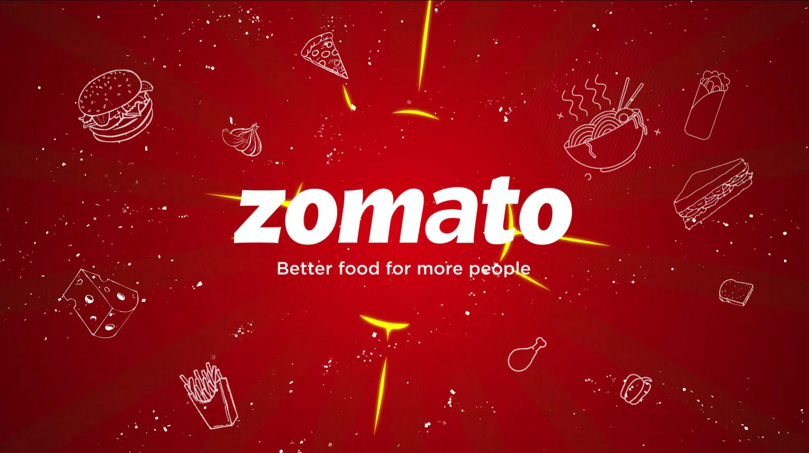

This E-commerce Data Analysis project leverages MySQL and Python to uncover insights like sales distribution, customer retention, and order trends. It showcases skills in MySQL and Python connector to drive valuable business insights from data.


I Built a Python-based Superstore Sales Analysis tool to process, clean, and analyze large datasets, extracting insights into sales trends, customer segmentation, and product performance. Implemented visualizations to identify seasonal peaks and high-demand products. Enhanced business insights through automated data processing and trend analysis.

The HR Analytics Dashboard provides an in-depth analysis of employee metrics, showcasing attrition rates, average age, and income distribution by job role. It includes visualizations of job satisfaction, marital status, education levels, and department-specific attrition trends. This dashboard empowers strategic HR decision-making by offering clear insights into workforce demographics and performance indicators.
Created an interactive Spotify data dashboard in Power BI, delivering in-depth analysis of track popularity by genre, artist, and release year. Designed visuals to depict energy distribution and highlight genre-specific trends, demonstrating expertise in data processing, transformation, and dynamic reporting.

Developed an interactive Zomato Power BI dashboard analyzing 9,551 restaurants across 15 countries, uncovering insights on restaurant distribution, pricing trends, and online delivery availability. Key visuals spotlight top-rated locations, popular cuisines, and engagement by price range, empowering data-driven decisions for growth and market analysis.